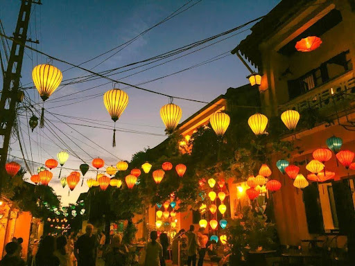
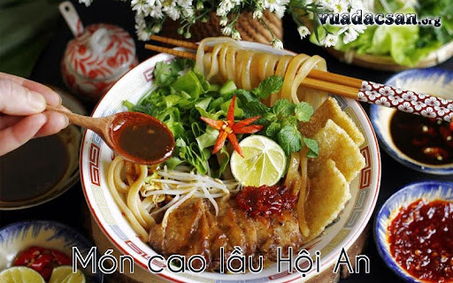

Nguồn: Mia.vnCảnh đẹp - Phố lồng đèn & nhà cổ Hội An
Phố cổ Hội An & lồng đèn rực rỡ: Hội An là “thành phố của ngàn ánh đèn” với những chiếc lồng đèn nhiều màu lung linh treo khắp các ngõ phố - đặc biệt đẹp nhất vào buổi tối và trong dịp Lễ hội đèn lồng hàng tháng. Bước vào khu Phố Cổ, bạn sẽ thấy những ngôi nhà cổ vàng hoài cổ, mái ngói rêu phong và những chiếc đèn lồng đủ sắc màu phản chiếu trên mặt sông Thu Bồn tạo nên một khung cảnh vừa lãng mạn vừa đầy văn hoá.

Nguồn: vuadacsan.orgMón ngon - Cao lầu & món đặc sản Hội An
Cao lầu - tinh hoa ẩm thực Hội An: Một trong những món ăn nổi tiếng nhất ở Hội An chính là cao lầu, sợi mì vàng mềm pha trộn với nước dùng đậm đà, thịt xắt lát và rau sống tươi - tất cả tạo nên hương vị độc đáo chỉ có ở đây. Ngoài ra, bạn cũng nên thử bánh mì Hội An thơm giòn, cơm gà xé phay và bánh bao “white rose”, là những món đặc sản mang đậm dấu ấn Trung - Nhật -Việt của vùng.

Ẩm Thực Độc Đáo
Đến Hội An không thể bỏ qua những món ăn nức tiếng như Cao Lầu, cơm gà hay bánh mì Phượng. Sự giao thoa văn hóa Việt - Hoa - Nhật đã tạo nên một hương vị ẩm thực riêng biệt, tinh tế mà bình dị.